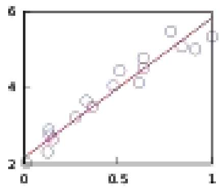

CHAPTER 10: NUMERICAL ANALYSIS
Introduction to Numerical analysis
Numerical analysis is the study of algorithms that use numerical approximation (as opposed to general symbolic manipulations) for the problems of mathematical analysis (as distinguished from discrete mathematics).
Numerical analysis naturally finds applications in all fields of engineering and the physical sciences, but in the 21 st century also the life sciences and even the arts have adopted elements of scientific computations. Ordinary differential equations appear in celestial mechanics (planets, stars and galaxies); numerical linear algebra is important for data analysis; stochastic differential equations and Markov chains are essential in simulating living cells for medicine and biology.
Before the advent of modern computers numerical methods often depended on hand interpolation in large printed tables. Since the mid 20th century, computers calculate the required functions instead. These same interpolation formulas nevertheless continue to be used as part of the software algorithms for solving differential equations.
General introduction
The overall goal of the field of numerical analysis is the design and analysis of techniques to give approximate but accurate solutions to hard problems, the variety of which is suggested by the following:
- Advanced numerical methods are essential in making numerical weather prediction feasible.
- Computing the trajectory of a spacecraft requires the accurate numerical solution of a system of ordinary differential equations.
- Car companies can improve the crash safety of their vehicles by using computer simulations of car crashes. Such simulations essentially consist of solving partial differential equations numerically.
- Hedge funds (private investment funds) use tools from all fields of numerical analysis to attempt to calculate the value of stocks and derivatives more precisely than other market participants.
- Airlines use sophisticated optimization algorithms to decide ticket prices, airplane and crew assignments and fuel needs. Historically, such algorithms were developed within the overlapping field of operations research.
- Insurance companies use numerical programs for actuarial analysis.
Approximation theory
Use computable functions $p(x)$ to approximate the values of functions $f(x)$ that are not easily computable or use approximations to simplify dealing with such functions. The most popular types of computable functions $p(x)$ are polynomials, rational functions, and piecewise versions of them, for example spline functions. Trigonometric polynomials are also a very useful choice.
- Best approximations. Here a given function $f(x)$ is approximated within a given finite-dimensional family of computable functions. The quality of the approximation is expressed by a functional, usually the maximum absolute value of the approximation error or an integral involving the error. Least squares approximations and minimax approximations are the most popular choices.
- Interpolation. A computable function $p(x)$ is to be chosen to agree with a given $f(x)$ at a given finite set of points $x$. The study of determining and analyzing such interpolation functions is still an active area of research, particularly when $p(x)$ is a multivariate polynomial.
- Fourier series. A function $f(x)$ is decomposed into orthogonal components based on a given orthogonal basis $\{\varphi 1, \varphi 2, \ldots\}$, and then $f(x)$ is approximated by using only the largest of such components. The convergence of Fourier series is a classical area of mathematics, and it is very important in many fields of application. The development of the Fast Fourier Transform in 1965 spawned a rapid progress in digital technology. In the 1990s wavelets became an important tool in this area.
- Numerical integration and differentiation. Most integrals cannot be evaluated directly in terms of elementary functions, and instead they must be approximated numerically. Most functions can be differentiated analytically, but there is still a need for numerical differentiation, both to approximate the derivative of numerical data and to obtain approximations for discretizing differential equations.
Numerical methods
Mathematical techniques for solving practical problems. They are called numerical methods because they produce the solution as real numbers such as " 3.1768 ", rather than as algebraic expressions (such as " $x^{2}+c$ ") or surds (such as " $2 \pm \sqrt{11}$ " where sqrt means the square root function).
Numerical methods are, some might say, a lot easier to use than the algebraic methods.
Numerical methods to solve three types of problem:
- Find a solution to a nonlinear equation $\mathrm{F}(x)=0$
- Find an interpolated value from a table of data
- Find the numerical solution of a differential equation
Direct and iterative methods
Direct methods compute the solution to a problem in a finite number of steps. These methods would give the precise answer if they were performed in infinite precision arithmetic. Examples include Gaussian elimination, the QR factorization method for solving systems of linear equations, and the simplex method of linear programming. In practice, finite precision is used and the result is an approximation of the true solution (assuming stability).
In contrast to direct methods, iterative methods are not expected to terminate in a finite number of steps. Starting from an initial guess, iterative methods form successive approximations that converge to the exact solution only in the limit. A convergence test, often involving the residual, is specified in order to decide when a sufficiently accurate solution has (hopefully) been found. Even using infinite precision arithmetic these methods would not reach the solution within a finite number of steps (in general). Examples include Newton's method, the bisection method, and Jacobi iteration. In computational matrix algebra, iterative methods are generally needed for large problems.
Downloaded by Patrick Ngobiro (pngobiro@gmail.com)
Iterative methods are more common than direct methods in numerical analysis. Some methods are direct in principle but are usually used as though they were not, e.g. GMRES and the conjugate gradient method. For these methods the number of steps needed to obtain the exact solution is so large that an approximation is accepted in the same manner as for an iterative method.
Direct vs iterative methods
Consider the problem of solving
for the unknown quantity $x$.
Direct method
Subtract $4 \quad 3 x^{3}=24$.
Divide by $3 \quad x^{3}=8$.
Take cube roots $\quad x=2$.
Iterative method
For the iterative method, apply the bisection method to $f(x)=3 x^{3}-24$. The initial values are $a= 0, b=3, f(a)=-24, f(b)=57$.
| $\boldsymbol{a}$ | $\boldsymbol{b}$ | mid | $\boldsymbol{f}$ (mid) |
|---|---|---|---|
| 0 | 3 | 1.5 | -13.875 |
| 1.5 | 3 | 2.25 | 10.17... |
| 1.5 | 2.25 | 1.875 | -4.22... |
| 1.875 | 2.25 | 2.0625 | 2.32... |
We conclude from this table that the solution is between 1.875 and 2.0625. The algorithm might return any number in that range with an error less than 0.2.
Discretization
Furthermore, continuous problems must sometimes be replaced by a discrete problem whose solution is known to approximate that of the continuous problem; this process is called discretization. For example, the solution of a differential equation is a function. This function must be represented by a finite amount of data, for instance by its value at a finite number of points at its domain, even though this domain is a continuum.
Discretization and numerical integration
In a two-hour race, we have measured the speed of the car at three instants and recorded them in the following table.
| Time | 0:20 | 1:00 | 1:40 |
|---|---|---|---|
| km/h | 140 | 150 | 180 |
A discretization would be to say that the speed of the car was constant from 0:00 to $0: 40$, then from $0: 40$ to $1: 20$ and finally from 1:20 to $2: 00$. For instance, the total distance traveled in the first 40 minutes is approximately $(2 / 3 \mathrm{~h} \times 140 \mathrm{~km} / \mathrm{h})=93.3 \mathrm{~km}$. This would allow us to estimate the total distance traveled as $93.3 \mathrm{~km}+100 \mathrm{~km}+120 \mathrm{~km}=$ 313.3 km , which is an example of numerical integration (see below) using a Riemann sum, because displacement is the integral of velocity.
III-conditioned problem: Take the function $f(x)=1 /(x-1)$. Note that $f(1.1)=10$ and $f(1.001)=1000$ : a change in $x$ of less than 0.1 turns into a change in $f(x)$ of nearly 1000 . Evaluating $f(x)$ near $x=1$ is an ill-conditioned problem.
Well-conditioned problem: By contrast, evaluating the same function $f(x)=1 /(x-1)$ near $x=10$ is a well-conditioned problem. For instance, $f(10)=1 / 9 \approx 0.111$ and $f(11)=$ 0.1: a modest change in $x$ leads to a modest change in $f(x)$.
Generation and propagation of errors
The study of errors forms an important part of numerical analysis. There are several ways in which error can be introduced in the solution of the problem.
Round-off
Round-off errors arise because it is impossible to represent all real numbers exactly on a machine with finite memory (which is what all practical digital computers are).
Truncation and discretization error
Truncation errors are committed when an iterative method is terminated or a mathematical procedure is approximated, and the approximate solution differs from the exact solution. Similarly, discretization induces a discretization error because the solution of the discrete problem does not coincide with the solution of the continuous problem. For instance, in the iteration in the sidebar to compute the solution of $3 x^{3}+4=28$, after 10 or so iterations, we conclude that the root is roughly 1.99 (for example). We therefore have a truncation error of 0.01 .
Once an error is generated, it will generally propagate through the calculation. For instance, we have already noted that the operation + on a calculator (or a computer) is inexact. It follows that a calculation of the type $a+b+c+d+e$ is even more inexact.
What does it mean when we say that the truncation error is created when we approximate a mathematical procedure? We know that to integrate a function exactly requires one to find the sum of infinite trapezoids. But numerically one can find the sum of only finite trapezoids, and hence the approximation of the mathematical procedure. Similarly, to differentiate a function, the differential element approaches zero but numerically we can only choose a finite value of the differential element.
Areas of study
The field of numerical analysis includes many sub-disciplines. Some of the major ones are:
Computing values of functions
One of the simplest problems is the evaluation of a function at a given point. The most straightforward approach, of just plugging in the number in the formula is sometimes not very efficient. For polynomials, a better approach is using the Horner scheme, since it reduces the necessary number of multiplications and additions. Generally, it is important to estimate and control round-off errors arising from the use of floating point arithmetic.
Interpolation, extrapolation, and regression
Interpolation solves the following problem: given the value of some unknown function at a number of points, what value does that function have at some other point between the given points?
Extrapolation is very similar to interpolation, except that now we want to find the value of the unknown function at a point which is outside the given points.
Regression is also similar, but it takes into account that the data is imprecise. Given some points, and a measurement of the value of some function at these points (with an error), we want to determine the unknown function. The least squares-method is one popular way to achieve this.
Interpolation: We have observed the temperature to vary from 20 degrees Celsius at 1:00 to 14 degrees at 3:00. A linear interpolation of this data would conclude that it was 17 degrees at 2:00 and 18.5 degrees at $1: 30 \mathrm{pm}$.
Extrapolation: If the gross domestic product of a country has been growing an average of 5% per year and was 100 billion dollars last year, we might extrapolate that it will be 105 billion dollars this year.
Regression: In linear regression, given $n$ points, we compute a line that passes as close as possible to those $n$ points.
Optimization: Say you sell lemonade at a lemonade stand, and notice that at $\$ 1$, you can sell 197 glasses of lemonade per day, and that for each increase of $\$ 0.01$, you will sell one glass of lemonade less per day. If you could charge $\$ 1.485$, you would maximize your profit, but due to the constraint of having to charge a whole cent amount, charging $\$ 1.48$ or $\$ 1.49$ per glass will both yield the maximum income of $\$ 220.52$ per day.
Differential equation: If you set up 100 fans to blow air from one end of the room to the other and then you drop a feather into the wind, what happens? The feather will follow the air currents, which may be very complex. One approximation is to measure the speed at which the air is blowing near the feather every second, and advance the simulated feather as if it were moving in a straight line at that same speed for one second, before measuring the wind speed again. This is called the Euler method for solving an ordinary differential equation.
Solving equations and systems of equations
Another fundamental problem is computing the solution of some given equation. Two cases are commonly distinguished, depending on whether the equation is linear or not. For instance, the equation $2 \chi+5=3$ is linear while $2 \chi 2+5=3$ is not.
Much effort has been put in the development of methods for solving systems of linear equations. Standard direct methods, i.e., methods that use some matrix decomposition are Gaussian elimination, LU decomposition, Cholesky decomposition for symmetric (or hermitian) and positive-definite matrix, and QR decomposition for non-square matrices. Iterative methods such as the Jacobi method, Gauss-Seidel method, successive over-relaxation and conjugate gradient method are usually preferred for large systems. General iterative methods can be developed using a matrix splitting.
Root-finding algorithms are used to solve nonlinear equations (they are so named since a root of a function is an argument for which the function yields zero). If the function is differentiable and the derivative is known, then Newton's method is a popular choice. Linearization is another technique for solving nonlinear equations.
Solving eigenvalue or singular value problems
Several important problems can be phrased in terms of eigenvalue decompositions or singular value decompositions. For instance, the spectral image compression algorithm is based on the singular value decomposition. The corresponding tool in statistics is called principal component analysis.
Optimization
Optimization problems ask for the point at which a given function is maximized (or minimized). Often, the point also has to satisfy some constraints.
The field of optimization is further split in several subfields, depending on the form of the objective function and the constraint. For instance, linear programming deals with the case that both the objective function and the constraints are linear. A famous method in linear programming is the simplex method.
The method of Lagrange multipliers can be used to reduce optimization problems with constraints to unconstrained optimization problems.
Evaluating integrals
Numerical integration, in some instances also known as numerical quadrature, asks for the value of a definite integral. Popular methods use one of the Newton-Cotes formulas (like the midpoint rule or Simpson's rule) or Gaussian quadrature. These methods rely on a "divide and conquer" strategy, whereby an integral on a relatively large set is broken down into integrals on smaller sets. In higher dimensions, where these methods become prohibitively expensive in terms of computational effort, one may use Monte Carlo or quasi-Monte Carlo methods, or in modestly large dimensions, the method of sparse grids.
Differential equations
Numerical analysis is also concerned with computing (in an approximate way) the solution of differential equations, both ordinary differential equations and partial differential equations.
Partial differential equations are solved by first discretizing the equation, bringing it into a finitedimensional subspace. This can be done by a finite element method, a finite difference method, or (particularly in engineering) a finite volume method. The theoretical justification of these methods often involves theorems from functional analysis. This reduces the problem to the solution of an algebraic equation.
Software
Since the late twentieth century, most algorithms are implemented in a variety of programming languages. The Netlib repository contains various collections of software routines for numerical problems, mostly in Fortran and C. Commercial products implementing many different numerical algorithms include the IMSL and NAG libraries; a free-software alternative is the GNU Scientific Library.
There are several popular numerical computing applications such as MATLAB, TK Solver, SPLUS, and IDL as well as free and open source alternatives such as FreeMat, Scilab, GNU Octave (similar to Matlab), and IT++ (a C++ library). There are also programming languages such as R (similar to S-PLUS) and Python with libraries such as NumPy, SciPy and SymPy. Performance varies widely: while vector and matrix operations are usually fast, scalar loops may vary in speed by more than an order of magnitude.
Many computer algebra systems such as Mathematica also benefit from the availability of arbitrary precision arithmetic which can provide more accurate results.
Also, any spreadsheet software can be used to solve simple problems relating to numerical analysis.